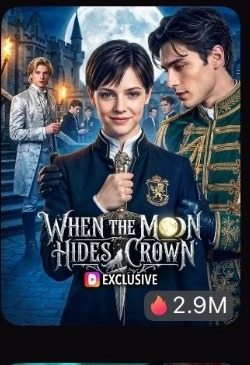

Set the visual bar
Establish clear expectations for character presentation, composition, scene continuity, and overall finish.
CASE 02 / DRAMAWAVE / APR 2026
Visual direction and final review across a multidisciplinary AI production team, with measurable platform performance after release.

CHALLENGE
At team scale, the problem is not generating enough images. It is maintaining one visual standard while characters, scenes, camera choices, edits, and generated details move through different hands.
PERSONAL CONTRIBUTION
I reviewed output across AI generation, directing, and editing, then approved or redirected work based on composition, character continuity, scene coherence, performance, cinematography, editing, and overall visual consistency.
KEY CREATIVE DECISIONS
My contribution centered on cross-department consistency and decision quality.
Establish clear expectations for character presentation, composition, scene continuity, and overall finish.
Evaluate AI output, directing choices, and edits as one connected visual system.
Identify the specific issue and translate it into actionable revision notes rather than subjective preference.
Make the final visual decision before assets and sequences move into delivery.
OUTCOME / EVIDENCE
Release-period screenshots document the title at No. 1 on the platform-wide ranking.
PROJECT SCOPE
The project demonstrates how I work when AI output is produced at team scale: define the standard, evaluate quickly, give precise revision direction, and protect visual coherence through final approval.
CREDITS & LINKS